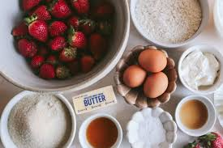
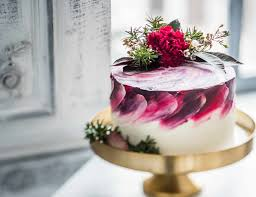

Fresh Ingredients
We bake every morning with free-range eggs and locally sourced butter and flour.
Handmade cakes, baked fresh daily in Newton-Le-Willows
We've been baking traditional and custom cakes for Newton-Le-Willow families since 2010. From a classic Victoria sponge to a bespoke wedding showstopper, everything is made by hand using locally sourced ingredients.
Browse Our CakesSweet Crumb is a small family bakery in the heart of Newton-Le-Willow. Every cake is mixed, baked and decorated in our own kitchen by our team of three bakers. We believe a good cake is a mix of flour, eggs, sugar and butter — plus a lot of care — and we only use free-range eggs and British butter in everything we make.
Whether you're celebrating a birthday, a wedding, or just a Wednesday, we'd love to bake you something special.

We bake every morning with free-range eggs and locally sourced butter and flour.

Choose your flavours, icing, toppings and even dietary alternatives like gluten-free.
We deliver anywhere in Merseyside, seven days a week, from 8am to 6pm.